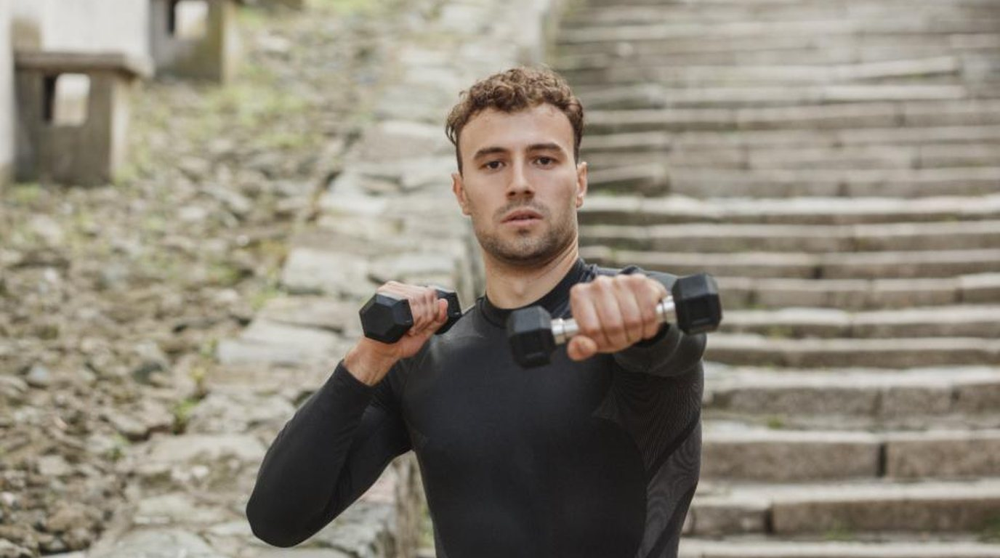

ASAHIKAWA PRIVATE GYM
2ヶ月で、なりたい身体の「軸」をつくる。
完全個室・マンツーマン・食事指導つき。
旭川のパーソナルジム AXIS。
人目を気にせず集中できる完全個室。
担当トレーナーが最後まで一貫して伴走します。
アプリで毎日の食事を報告。
無理な糖質制限ではなく、続けられる食習慣を設計します。
ウェア・シューズ・タオル・水すべて無料レンタル。
仕事帰りに手ぶらでどうぞ。
週2回・全16回のマンツーマン指導で、正しいフォームと食習慣を身につけます。
リバウンドさせないための「卒業後の設計」まで含めたプログラムです。
お腹まわりが別人に。
食事の考え方が変わったのが一番の収穫です。
産後戻らなかった体重が落ち、姿勢も良くなりました。
個室なので気楽。
細身がコンプレックスでしたが、しっかり筋肉で増量できました。
まずは無料カウンセリングから。
体組成測定と目標設計まで、無料で体験できます。